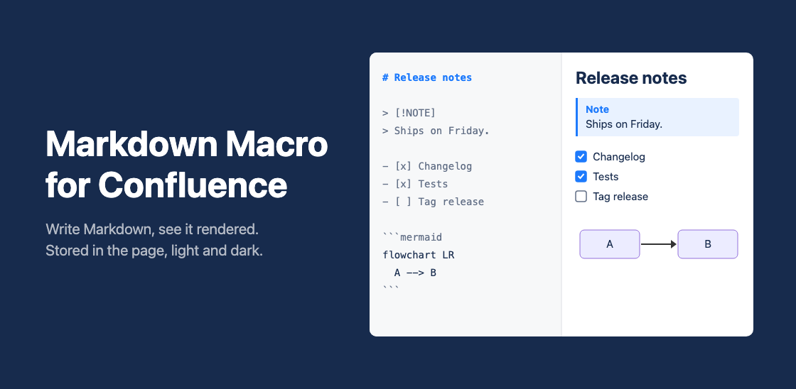

Markdown Macro for Confluence
Write Markdown in a Confluence page and see it rendered, with tables, task lists, alerts, highlighted code and Mermaid diagrams. The Markdown is saved in the page itself.

Add Markdown to a page
- A Confluence admin installs the app from the Atlassian Marketplace.
- Edit a page, type
/markdownand choose Markdown. The editor opens. - Write or paste Markdown on the left. The preview on the right updates as you type.
- Choose Save, or press Ctrl+S (Cmd+S on a Mac). Then publish the page as usual.
To change it later, edit the page, select the macro and choose Edit. Cancel closes the editor without changing anything.
Import a .md file
In the editor, choose Import .md file and pick a .md, .markdown or .txt file from your computer. Its text replaces what is in the editor, so you can check the preview before you save. Windows line endings are converted. The file is read in your browser and is not uploaded anywhere.
What you can write
- The basics: headings, bold, italic,
~~strikethrough~~, links, quotes, bullet and numbered lists, horizontal rules, and bare URLs that become links. - Tables with left, centre and right alignment.
- Task lists:
- [ ] to doand- [x] doneshow as checkboxes. They are read-only; change the text to tick one. - Alerts: a quote that starts with
[!NOTE],[!TIP],[!IMPORTANT],[!WARNING]or[!CAUTION]becomes a coloured box, as on GitHub. - Footnotes:
[^1]in the text and[^1]: the notebelow it. - Contents list: a line with only
[TOC](or[[_TOC_]]) lists the headings, up to level 3. Heading links work the way they do on GitHub, so[Install](#install)jumps to the Install heading. - Code: fenced code blocks are highlighted in 23 languages, including Bash, C#, Go, Java, JavaScript, JSON, Kotlin, PHP, Python, Ruby, Rust, SQL, Swift, TypeScript and YAML. Each block has a Copy button.
- Mermaid diagrams: a code block marked
mermaidis drawn as a diagram at its full height. If a diagram has a mistake, the error and the diagram's source are shown in its place, and the rest of the page still renders.
Light and dark themes follow your Confluence setting.
Images and HTML
Images written as  are shown as a link with the alt text, which opens the image in a new tab. This keeps the app from connecting to other websites. To show a picture in the page, attach it with Confluence's own image tool next to the macro.
Raw HTML in the Markdown is shown as plain text and never run. This protects readers from scripts pasted into a page.
Exports, copies and history
The Markdown is stored in the page as the macro's body, not in a separate database. It moves, copies and is versioned with the page. When you export the page to PDF or Word, the macro is exported as real headings, lists, tables, panels and code blocks. Mermaid diagrams are exported as their source code.
What the app can and cannot do
The app asks for no Confluence permissions. It only reads the Markdown that Confluence hands to the macro, and renders it in your browser. It has no server of its own, makes no connection outside Atlassian, and does not show pop-ups or announcements. See the privacy policy for details.
Troubleshooting
| You see | What to do |
|---|---|
| "This Markdown macro is empty" | Edit the page, select the macro, choose Edit and write some Markdown. |
| "Diagram not drawn" with an error | The Mermaid code has a mistake. The message says what Mermaid could not read; the Mermaid syntax reference shows the right form. |
| HTML tags shown as text | That is on purpose. Write the same thing in Markdown, or use a Confluence macro next to it. |
| "The Markdown macro license is not active" | A Confluence admin can renew or start a trial under Apps > Manage apps. |
| Markdown is missing from the / menu | Ask a Confluence admin to check that the app is installed and enabled under Apps > Manage apps. |
Still stuck? Email support@obsidianridgelabs.com with your Confluence site and a screenshot. We reply within two business days.
Pricing
Free for up to 10 users. Above that, $0.50 per user per month, billed by Atlassian with your Confluence subscription.